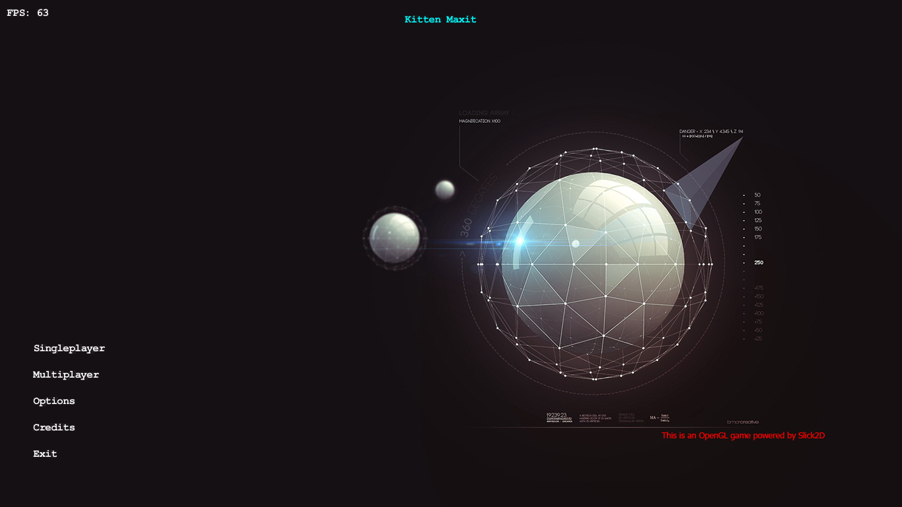
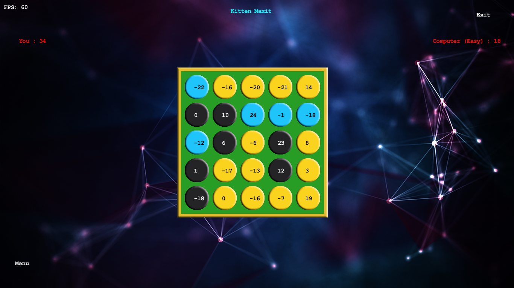

Kitten Maxit
--This is an implementation of Maxit Game, developed by Kittencode. This game is written on Java, with the help of slick2d 2D game library. --Kitten maxit is a turn based, strategy game. Each player choose a number, either from one of the last picked number's column or row. At the end, if no possible new number is available, the game ends. And the player with the higher points becomes winner. --Kitten Maxit is available to play, either against AI (currently only Easy mode) or with two player playing on the same machine alternating turns. --Project Contributors --Ahmet Kaşif --Abdullah Öğük --Uğur Kafalı --Hilmi Araz --Mustafa Özdemir --Download links will be added soon. >GitHub project link<  